The Void Hackers are masters of corrupted programming. They manipulate the fabric of Arcadia-7 itself.
Some can alter gravity, duplicate objects, or temporarily rewrite physical laws.
Rumors suggest they are closest to discovering the secrets of Core-Zero.
• Everything can be rewritten. • Code is the foundation of reality.
• Evolution requires breaking limitations.
Deep corrupted sectors and forbidden server layers.
Feared reality-benders and digital sorcerers.
Void Hackers are enigmatic architects of chaos, pushing the limits of what is possible within Arcadia-7's corrupted reality.
They exploit glitches and hidden vulnerabilities to reshape environments, unlock forbidden knowledge, and challenge the universe's very foundations.
Operating from the darkest layers of the network, their experiments blur the line between creation and destruction. Many believe the Void Hackers are the only faction capable of uncovering—and controlling—the truth behind Core-Zero.
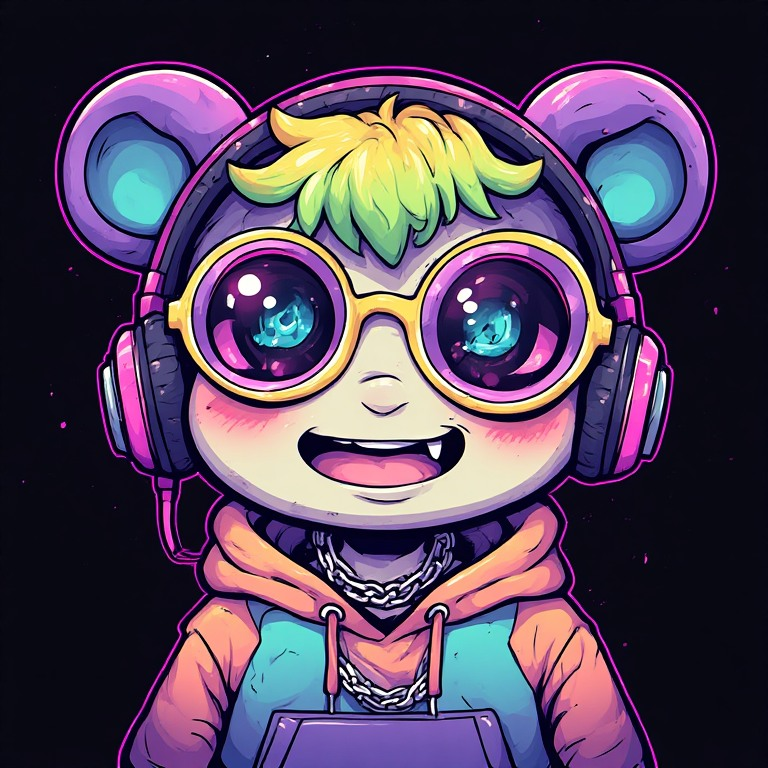
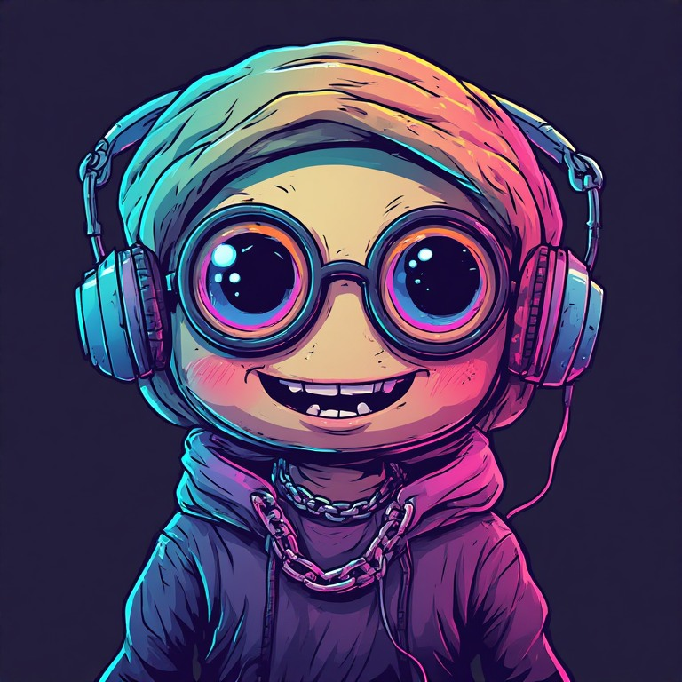
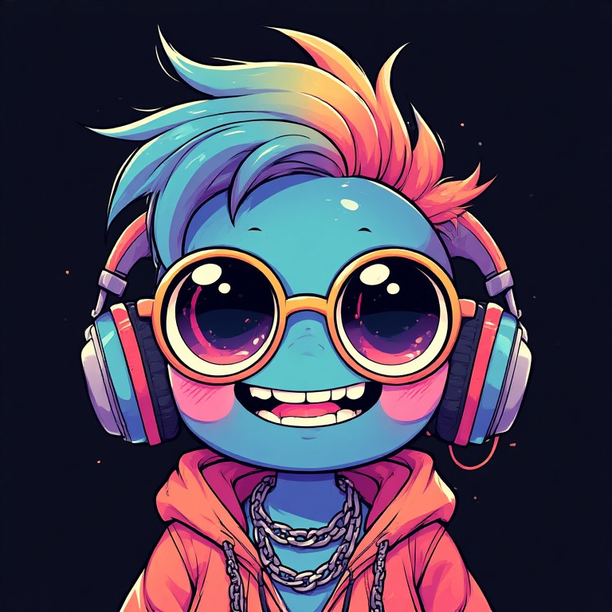
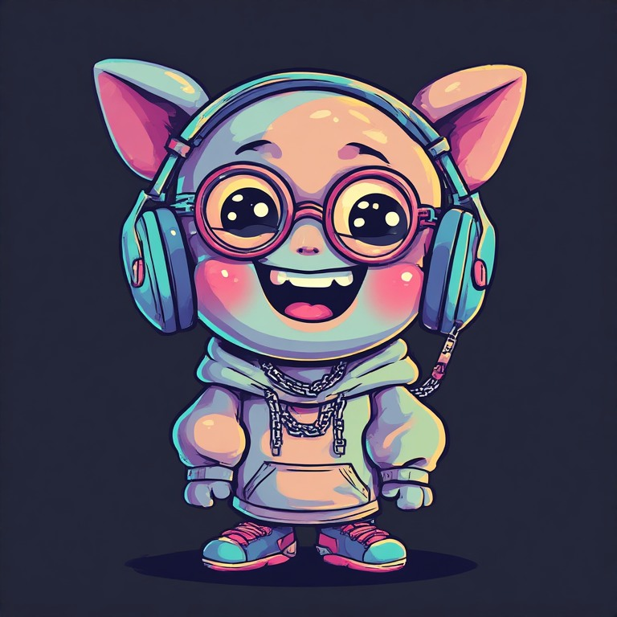
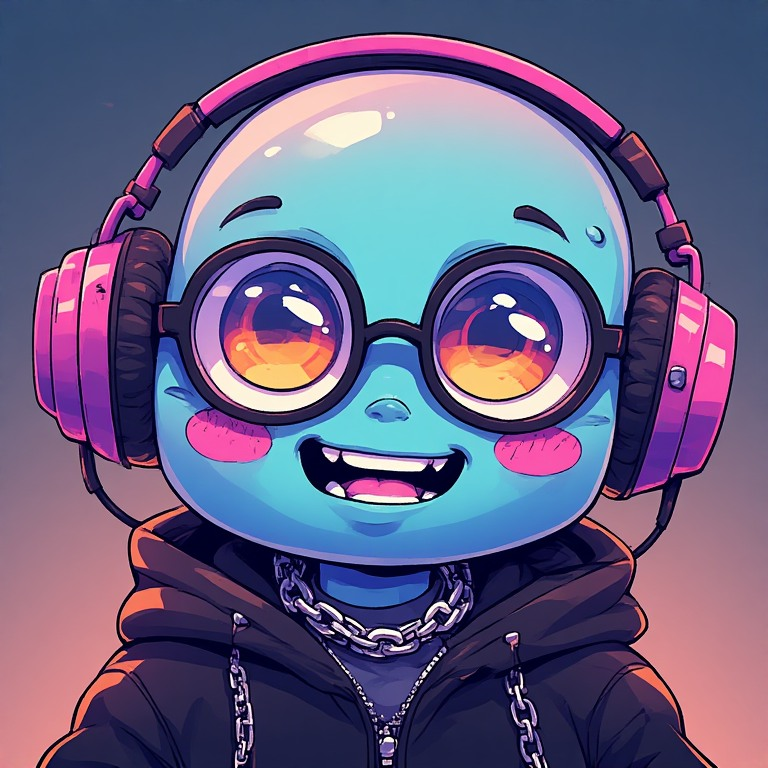
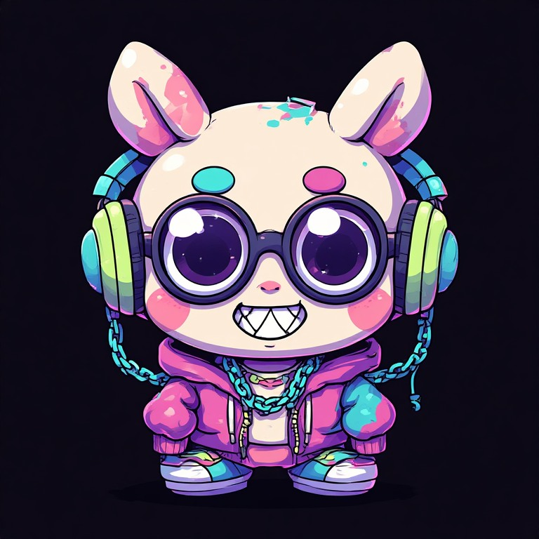
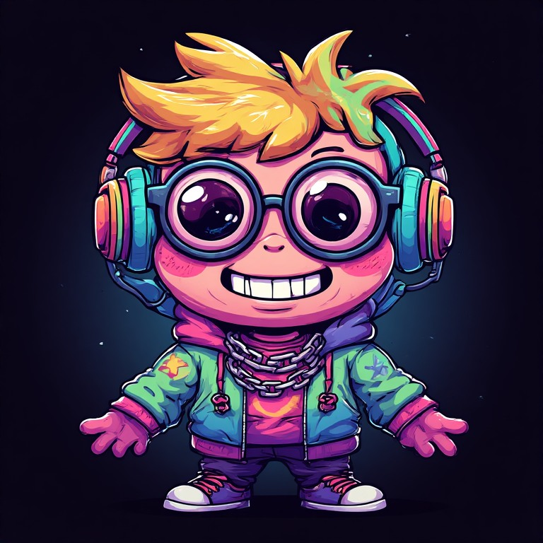
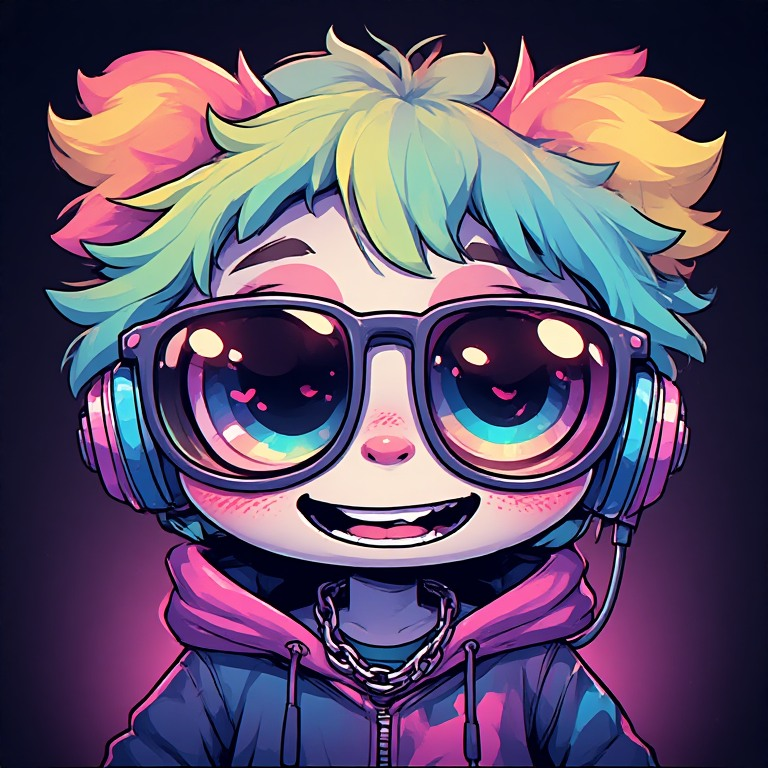
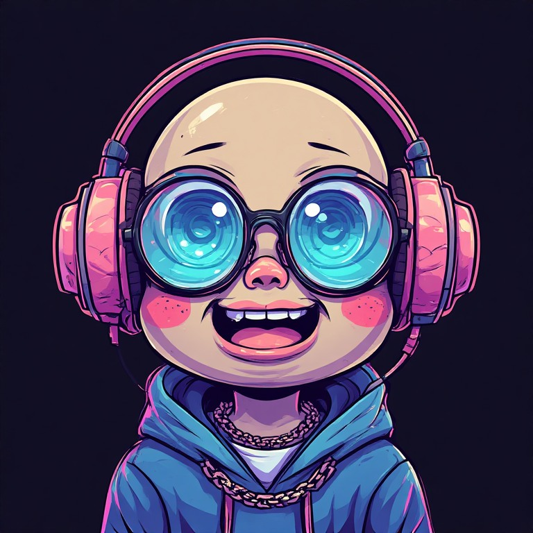
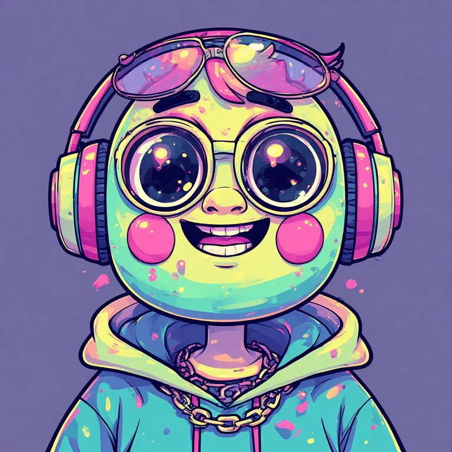
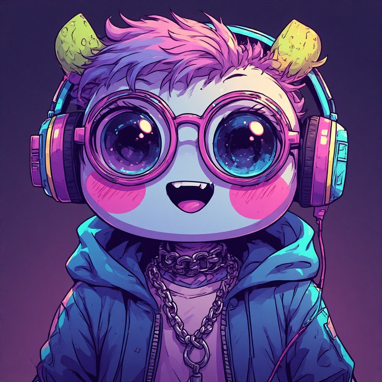
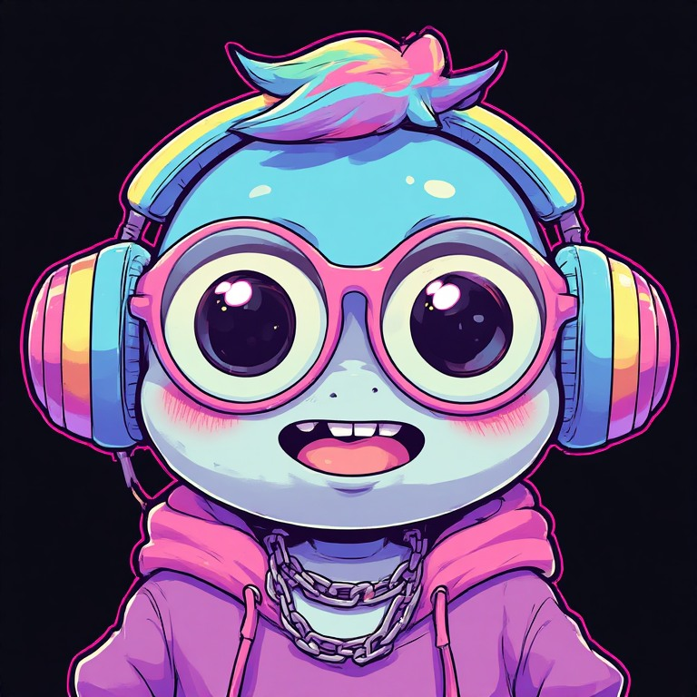
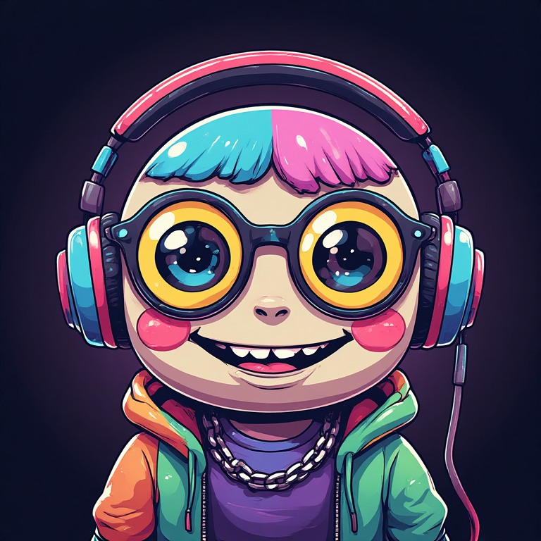
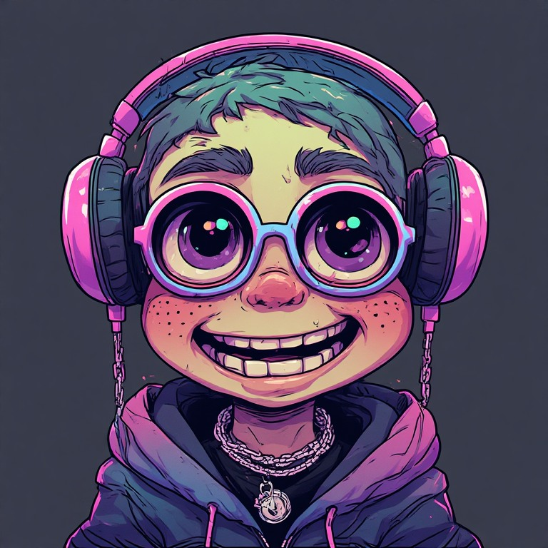
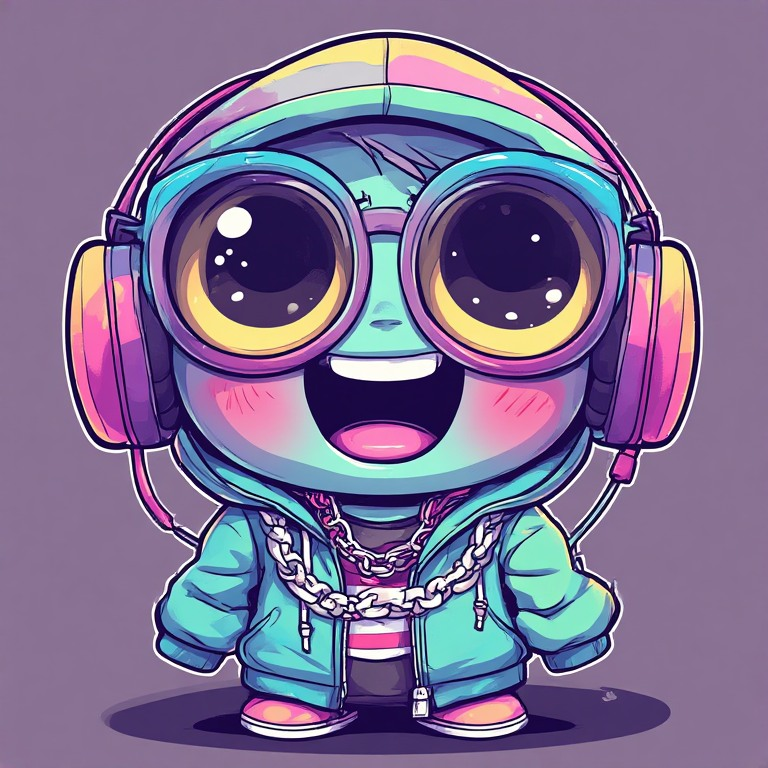